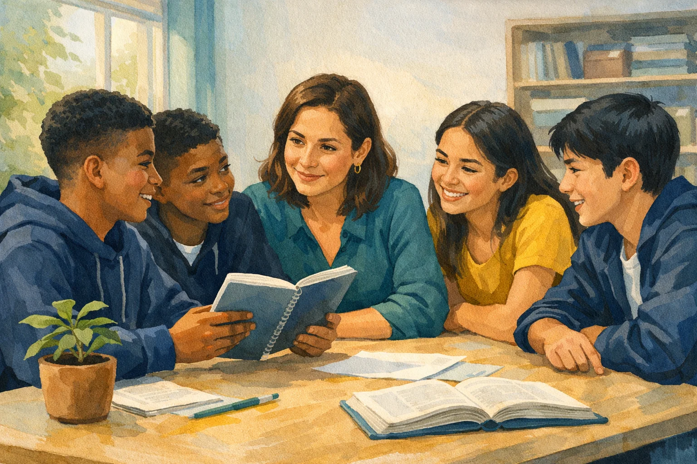
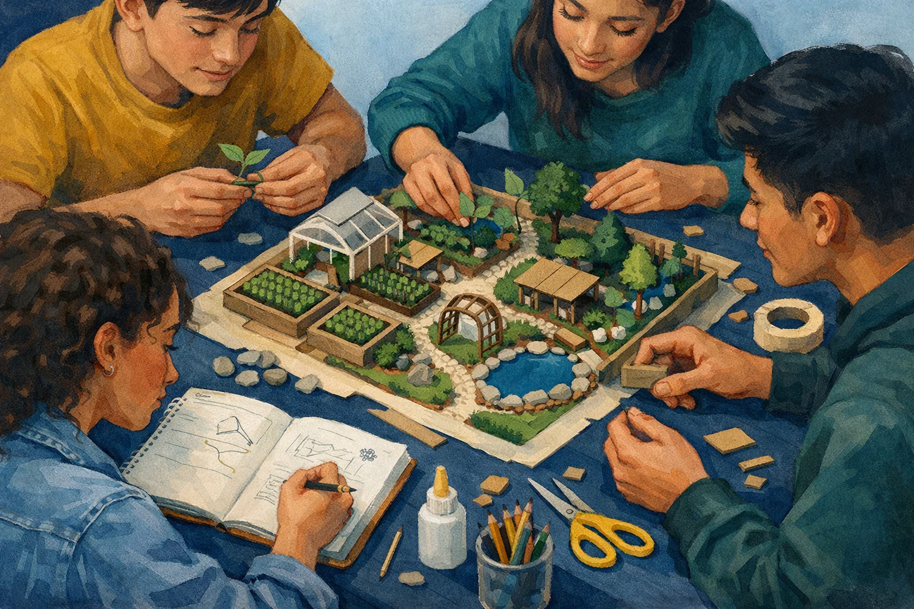

La brújula
de las HSE.
El cimiento del aprendizaje
y el liderazgo colectivo.
Conecta la evidencia internacional, el panorama colombiano y tu práctica docente. Descubre por qué lo socioemocional mueve el aprendizaje.
Comenzar a explorarExplora a tu manera. Conecta con tu aula.
Las HSE no son un contenido adicional.
Son el motor del aprendizaje, el bienestar y la transformación comunitaria.
Encuentra tu punto de partida
Tres miradas para comprender. Un compromiso para actuar.
El aprendizaje también
se construye desde lo emocional.
La evidencia internacional nos invita a mirar el desarrollo socioemocional como parte esencial de una educación de calidad.
Descubre el SEL en el aula
Según CASEL, el aprendizaje socioemocional es el proceso de adquirir y aplicar conocimientos, habilidades y actitudes. Ocurre en niños, jóvenes y adultos.
Toca los puntos de la escena. Descubre una idea y ponla a prueba.

HSE = habilidades que desarrollamos.SEL = el proceso de aprenderlas y ponerlas en práctica.
Una habilidad. Muchos efectos.
Selecciona cada beneficio para conectar la investigación con una situación de aula.
Conecta la idea
Una colega dice: «Para mejorar lectura y matemáticas, debemos dejar las emociones fuera de la clase». ¿Qué respuesta conecta mejor con la evidencia?
Una educación que cuida.
Un país que la impulsa.
La formación socioemocional se conecta con una trayectoria de derechos, ciudadanía y convivencia en Colombia.
Un camino que ya venimos recorriendo
- 1991Constitución Política
El artículo 67 reconoce la educación como derecho y como servicio con función social.
- 1994Ley 115
La Ley General de Educación orienta una formación integral de la persona.
- 2004Competencias ciudadanas
Los estándares del MEN conectan convivencia, participación y respeto por la diferencia.
- 2013Ley 1620
Se crea el Sistema Nacional de Convivencia Escolar.
La educación socioemocional gana lugar
Abre cada norma para reconocer su aporte y una conexión con la práctica docente.
2024Ley 2383Promoción de la educación socioemocional
Promueve la educación socioemocional como parte de la formación en preescolar, básica y media. El documento base destaca la confianza y el cuidado como soportes pedagógicos.
En el aula: hacer del reconocimiento emocional y de los vínculos de confianza una práctica sostenida, no un evento aislado.
Consultar el texto legal (abre otra pestaña)2024Ley 2414Habilidades sociales y emocionales
El documento base la vincula con el fortalecimiento de las habilidades sociales y emocionales, la convivencia pacífica y el bienestar escolar como cimientos de la paz.
En el aula: crear oportunidades para escuchar, comprender diferencias y construir acuerdos.
Consultar el texto legal (abre otra pestaña)2025Ley 2491Integración en el proyecto educativo
Según el documento base, dispone la integración del componente de competencias socioemocionales en los Proyectos Educativos Institucionales (PEI), con enfoque territorial y diferencial.
En el aula: contextualizar las estrategias en las identidades, necesidades y fortalezas de la comunidad educativa.
Consultar el texto legal (abre otra pestaña)2025Ley 2503Cátedra de Educación Emocional
Crea e implementa la Cátedra de Educación Emocional como un proceso intencional de desarrollo de la conciencia, la regulación y la autonomía emocional.
En el aula: planear oportunidades explícitas para reconocer emociones y practicar su regulación.
Consultar el texto legal (abre otra pestaña)Del yo al mundo
El referente «Un viaje curricular» del MEN, presentado en el documento base, conecta formación ciudadana y desarrollo socioemocional mediante un modelo concéntrico. Selecciona un círculo, observa su alcance y elige una acción.
Del marco a la práctica
Una institución quiere integrar las competencias socioemocionales en su PEI con enfoque territorial. ¿Qué norma se relaciona con esa intención en la panorámica presentada?
Esta panorámica sintetiza el documento de contenido del RED. Los enlaces permiten ampliar la consulta en los textos legales oficiales.
El liderazgo se cultiva.
Y se cultiva juntos.
En Enseña por Colombia, las HSE son una herramienta estratégica para movilizar aprendizajes académicos de rigor y promover el liderazgo colectivo.
Aprender con otros. Transformar con otros.
Esta visión se conecta con la red global Teach For All y el marco «Cultivando Líderes Juntos»: reconocer la capacidad de estudiantes y comunidades para contribuir a un futuro compartido.

Cuatro habilidades que se conectan
Explora cada habilidad. Encontrarás sus componentes, su propósito y una manera de llevarla al aula.
Entra al aula. Toma una decisión.
Observa una situación, reconoce la HSE y prueba una intervención. Cada elección revela una conexión con la práctica.
Una convicción que
se convierte en acción.
Construye tu Manifiesto de Liderazgo y Educación de Calidad. Elige un fundamento, una acción y un propósito que conecten con tu práctica.
¿Por qué integrar las HSE?
Elige la convicción que quieres poner en el centro.
¿Qué harás en el aula?
Selecciona una acción concreta para comenzar.
¿Qué quieres movilizar?
Conecta tu acción con una transformación.
Mi manifiesto
0 de 3 eleccionesTu compromiso toma forma aquí. Elige una opción en cada grupo para construirlo.
Lleva esta brújula a tu aula.
Antes de tu próxima clase, piensa en qué momento pondrás en práctica tu compromiso. La intención se vuelve aprendizaje cuando la llevamos a la acción.
Tu recorrido
Completa las actividades de cada mirada para conectar todos los fundamentos.
Solo el avance del recorrido se guarda en este navegador. Tus elecciones no se envían ni son revisadas.